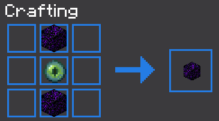

Gateway
1.16 +
This Data Pack adds the ability to travel very fast between places you've already visited. You can even mark each Gateway with a block to easily remember which Gateway to take.
Setup
Craft two Gateways and a Gateway Linker. Place the Gateways at the two endpoints and right click the block below the two Gateways with the Gateway Linker. If a Gateway isn't linked, it will cry because it has no partner.
To mark a Gateway you need to drop a Flint along with the marker block underneath the Gateway. Only the Flint will be consumed in the process.
To remove the Gateway simply break the Block underneath it. If the Gateway was linked to another one, the linked Gateway will be removed as well.
Crafting
Gateway Linker Recipe

Gateway Recipe
The Crafting Table will show a Eye of Ender or a Crying Obsidian as result, but you will get the correct item after you take it out.
You can repair your Gateway Linker, if you drop a Ender Pearl with the Gateway Linker on an Anvil. To get more durability you can also enchant it with Unbreaking.
Settings
Change the maximum count of linked Gateways you can have in the world. (Default: 20)
It can cause lags, if you have a to big amount of Gateways.
/scoreboard players set #max gateway 20
Disable tool damage for the Gateway Linker.
To enable it again you need to execute the same command except of the 1 replace with a 0.
/scoreboard players set #damage gateway 1
Remove all Gateways.
/function gateway:reset